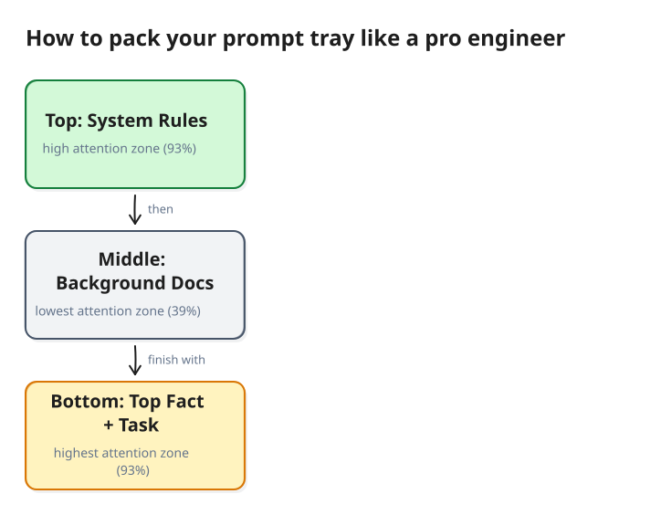

“An LLM has total amnesia between turns — your chat app re-sends the whole tray every turn, KV Prefix Caching saves 81% when the top stays frozen, and the middle of a giant tray is a recall dead zone.”
Explain it like I'm 12: The Amnesia Chef and the Fixed-Size Lunch Tray
Remember from Lesson 1 that the AI's neural weights are frozen on disk? The moment an LLM finishes replying to you, it has 100% amnesia. The model itself is completely stateless — it stores zero memory of your chat inside its weights.
Then how does a chat app remember what you said three turns ago? Because the app pulls off a sleight-of-hand trick: every time you hit Send, your client silently packs System Rules + Turn 1 + Reply 1 + Turn 2 + Reply 2 + Your New Message into one giant array and sends the entire script from scratch on a fixed-size tray called the context window.
What shares the tray? Everything! Your system prompt, tool/JSON schemas, retrieved RAG documents, chat history, the model's visible reply, and any hidden reasoning/thinking tokens (used by reasoning models like o3, Claude extended thinking, or DeepSeek-R1) all count against the exact same ceiling.
Look at Step 1 of our lab (Figure 1): our toy tray holds at most 24 words. In Turn 1 you share 'My secret locker code is 7492.' By Turn 5, the conversation overflows 24 words, so FIFO truncation silently shoves Turns 1–3 off the left edge. When Turn 5 asks for the locker code, the model isn't 'being dumb' — Turn 1 literally isn't in the HTTP payload!

Production memory strategies when chats exceed the tray: (1) Sliding Window (FIFO) drops oldest turns — simple, loses early facts; (2) Rolling Summary periodically compresses old turns into a concise memory block; (3) External Vector/Graph Memory (RAG) stores key user facts in a database and retrieves only relevant ones back onto the tray.
The Billing Shock — and the KV Prefix Caching Superpower
Re-sending the whole script every turn creates two huge engineering consequences:
1. You pay for Turn 1 ten times (unless you cache the prefix!): In Step 2 of our lab, a 10-turn chat with a 400-token system prompt and 150-token messages bills 19,000 uncached input tokens — paying for your system prompt and Turn 1 over and over! Modern APIs (Anthropic, OpenAI, Gemini, vLLM) solve this with Prompt Caching (KV Prefix Caching): if the beginning of your prompt stays byte-for-byte identical across turns, the server reuses its saved Key-Value attention state and discounts those cached prefix tokens by up to 90%, slashing our 10-turn lab bill from 19,000 down to 3,610 effective tokens (81.0% cheaper) — plus cutting Time-to-First-Token latency dramatically! 2. Why giant contexts slow down (O(N²) self-attention): Inside a standard Transformer, every new token attends to every earlier token. Look at Step 3 of our lab: - 1,000 tokens → 500,500 attention pairs - 10,000 tokens → 50,005,000 pairs (100× more!) - 100,000 tokens → 5,000,050,000 pairs (5 BILLION pairs!)
Even with FlashAttention and KV caching, stuffing 100k noisy tokens onto the tray slows every call and increases memory bandwidth cost.
Real API prompt-caching fine print: (1) Providers require a minimum cacheable prefix length (typically 1,024+ tokens for OpenAI/Anthropic, so tiny 400-token toy prompts won't trigger server caching in production — our lab uses 400 tokens just to keep the arithmetic easy to trace by hand); (2) Anthropic charges a cache-write surcharge (e.g., 1.25× on the first write) and 0.1× on cache reads within a ~5-minute TTL (OpenAI caches automatically at 0.5×–0.1× with no write surcharge). Either way, any multi-turn chat or agent with a frozen system prompt + tool definitions pays back the first write immediately.
Common Trap — Breaking Your Own Prompt Cache! Never put a live timestamp (Current time: 17:05:23), random request ID, or dynamic user query at the VERY TOP of your system prompt! Changing even 1 token at byte #1 invalidates the entire downstream KV prefix cache on every single turn. Put static rules & tool schemas FIRST, dynamic info LAST.
Lost in the Middle & Context Rot: Why 1M Advertised ≠ 1M Effective
When models began advertising 128k–1M token windows, teams tried dumping 300 pages of messy logs into one prompt. Quality collapsed — even when everything fit comfortably on the tray.
Two landmark findings explain why: 1. Lost in the Middle (Liu et al., Stanford 2023): Across multi-document QA benchmarks, models recall key facts sharply when placed at the very beginning (primacy) or very end (recency) of a long context, but accuracy drops into a deep U-shaped trough in the middle. Step 4 of our lab illustrates this U-curve shape analytically (93.0% at Chunk 1 & 10 vs 38.7% in Chunk 6 — explicitly modeled to visualize Liu et al.'s empirical pattern). 2. Context Rot (Distractor Interference): Newer frontier models score ~99% on simple 'find one exact passphrase' Needle-in-a-Haystack tests, yet still suffer Context Rot on multi-hop reasoning as you pile on loosely related distractor chunks. Every irrelevant paragraph dilutes attention weights and raises hallucination risk.

Always distinguish advertised context limit (the maximum sequence length the positional embeddings/RoPE accept without crashing) from effective context length (the length where multi-hop reasoning and instruction-following remain accurate — often a fraction of the advertised ceiling).
The Production Prompt Budget Formula (How to pack the tray like a pro)
Before shipping any LLM app, budget your tray explicitly: System + Tool Schemas + Few-Shot Examples + Retrieved Context + Chat History + Reserved Output + Reasoning Budget ≤ Context Limit
And order your blocks from top to bottom (Figure 3) to win BOTH KV Prefix Caching AND Primacy/Recency Attention: 1. Top (Static + High Primacy): Immutable system role, formatting rules, and tool schemas. Because this block never changes between turns, it hits the 90% KV cache discount every time. 2. Middle (Lower Attention): Older conversation history or secondary background documents. 3. Bottom (Highest Recency): Your #1 highest-ranked retrieved document, the live timestamp/dynamic variables, and the exact user question right before generation begins.

Plain-English Jargon Decoder
| Term | In Plain Words | Why You Care |
|---|---|---|
| context window | The fixed-size token tray that holds your entire input prompt plus the model's generated answer in one call. | Your hard ceiling on how much text the model can see at once. |
| prompt | All the tokens you place on the tray before the model starts guessing (system rules, history, docs, question). | Because the model is stateless, anything not in the weights or the current prompt does not exist. |
| completion | The new tokens generated by the model and added onto the tray. | Completion tokens share the context window limit with your prompt and usually cost 3x–5x more per token. |
| truncation | Chopping off the oldest or overflowing tokens when your text exceeds the context window budget. | Silent truncation drops early instructions or facts without throwing an error if you don't budget tokens. |
| lost in the middle | The U-shaped accuracy drop where models recall facts at the very start and very end of a long prompt far better than facts in the middle. | Tells you to place your top retrieved facts and final instructions at the very start or very bottom of the prompt. |
| prompt caching (KV prefix cache) | Reusing the model's precomputed attention state for identical prompt beginnings across calls. | Cuts multi-turn chat and agent input costs by 50%–90% — if you keep static instructions at the very top. |
| context rot | Reasoning accuracy steadily degrading as you pack more irrelevant distractor text into a long prompt. | Proves that retrieving 5 crisp, relevant chunks beats dumping 50 noisy pages into a 1M window. |
| reasoning tokens | Hidden scratchpad tokens generated by thinking models before emitting the final visible answer. | They share your context window budget AND are billed as output tokens. |
Core Code Walkthrough: Simulate Sliding Context Truncation, KV Prefix Caching (81% Savings), O(N²) Pairs & U-Curve
Watch Turn 1's locker code ('7492') fall off a 24-word sliding tray, calculate the exact 81.0% token savings from KV Prefix Caching across a 10-turn chat, measure O(N²) attention pair explosion, and inspect the Liu et al. U-curve.
FIFO Sliding Window Truncation (Why `7492` Vanishes)
for msg in reversed(history):
cost = len(msg.split())
if used + cost <= max_words:
kept.append(msg); used += cost
else:
dropped.append(msg)Why this exists: Walking backward from the newest turn packs the most recent messages onto the tray first. The instant `used + cost > max_words`, older messages (including Turn 1's locker code `7492`) are silently evicted — the model never even receives them.
Multi-Turn Billing & The 81% KV Prefix Cache Discount
if t == 1:
fresh_tokens += system_tokens + new_msg
else:
cached_prefix_tokens += prefix_so_far
fresh_tokens += new_msgWhy this exists: Across 10 turns, uncached chat bills `19,000` input tokens because Turn 1 is re-billed 10 times (`O(T^2)` total tokens!). With KV Prefix Caching (`0.1x` cost on cached prefix), the exact same 10-turn chat drops to `3,610` effective tokens (`81.0%` cheaper).
Quadratic Causal Attention Scaling `O(N^2)`
for n in (1_000, 10_000, 100_000):
pairs = n * (n + 1) // 2Why this exists: In causal self-attention, token `k` attends to all `k` tokens before it (`1 + 2 + ... + N = N(N+1)/2`). Scaling context 10x from `10k -> 100k` tokens multiplies attention pairs by **100x** (`50M -> 5.0B` pairs), driving up Time-To-First-Token (TTFT).
The Primacy/Recency U-Curve Placement Rule
x = position_index / max(total_chunks - 1, 1)
recall = 0.38 + 2.2 * ((x - 0.5) ** 2)Why this exists: This analytical curve reproduces Liu et al. (2023)'s empirical discovery: recall stays high (`~93%`) at the opening and closing edges (`x = 0` and `x = 1`) and sags sharply (`~38.7%`) in the middle (`x = 0.5`).
Verified Terminal Output (Exit Code 0)
=== STEP 1: Sliding Context Window Budget (Max 24 words) ===
Dropped at the door (3 turns): ['Turn 1: My secret locker code is 7492.', 'Turn 2: Let us discuss the cafeteria menu for Monday.', 'Turn 3: The cafeteria serves masala dosa and filter coffee.']
Inside context window (2 turns, 22/24 words): ['Turn 4: On Tuesday the library hosts a robotics club demo.', 'Turn 5: What was my secret locker code from Turn 1?']
Can the model see '7492'? -> False (Turn 1 fell off the tray!)
=== STEP 2: 10-Turn Chat Billing — Uncached vs KV Prefix Caching ===
Uncached total input tokens billed across 10 turns: 19,000
With Prefix KV Cache: 17,100 cached (0.1x) + 1,900 fresh = 3,610 eff. tokens (81.0% cheaper!)
=== STEP 3: Quadratic Self-Attention Pairs O(N^2) ===
Context N = 1,000 tokens -> 500,500 causal attention pairs
Context N = 10,000 tokens -> 50,005,000 causal attention pairs
Context N = 100,000 tokens -> 5,000,050,000 causal attention pairs
=== STEP 4: Illustrative U-Curve Model (Liu et al., 2023 'Lost in the Middle') ===
Chunk 1/10 [START (Primacy)] -> Modeled recall: 93.0%
Chunk 3/10 [INNER ] -> Modeled recall: 55.0%
Chunk 6/10 [DEAD MIDDLE ] -> Modeled recall: 38.7%
Chunk 8/10 [INNER ] -> Modeled recall: 55.0%
Chunk 10/10 [END (Recency) ] -> Modeled recall: 93.0%View Complete Source Code (lab_main.py)
"""Pure-Python Context Window, KV Prompt Caching & U-Curve Attention Lab (l0-context-window).
Demonstrates:
1. Sliding context window FIFO truncation (why Turn 1's locker code '7492' vanishes).
2. Multi-turn token billing: why uncached 10-turn chats re-pay for Turn 1 ten times —
and how KV Prefix Caching cuts input costs by up to 80%+ when your prefix stays immutable.
3. Quadratic self-attention cost O(N^2) as context grows from 1k -> 10k -> 100k tokens.
4. Analytical U-curve model illustrating the primacy/recency shape from Liu et al. (2023).
Zero external dependencies (Python 3 stdlib only).
"""
from __future__ import annotations
def build_chat_payload(history: list[str], max_words: int) -> tuple[list[str], list[str], int]:
"""Simulate a sliding context window that drops oldest messages when budget overflows."""
kept: list[str] = []
dropped: list[str] = []
used = 0
for msg in reversed(history):
cost = len(msg.split())
if used + cost <= max_words:
kept.append(msg)
used += cost
else:
dropped.append(msg)
kept.reverse()
dropped.reverse()
return kept, dropped, used
def simulate_multiturn_billing(turns: int = 10, system_tokens: int = 400, turn_tokens: int = 150) -> tuple[int, int, int]:
"""Compare total input tokens billed without vs with KV Prefix Caching (90% discount on cached prefix)."""
uncached_input = 0
cached_prefix_tokens = 0
fresh_tokens = 0
prefix_so_far = system_tokens
for t in range(1, turns + 1):
new_msg = turn_tokens
if t == 1:
# First turn computes the system prompt + Turn 1 fresh
fresh_tokens += system_tokens + new_msg
else:
# Turns 2..N reuse the exact prefix KV cache from prior turns!
cached_prefix_tokens += prefix_so_far
fresh_tokens += new_msg
uncached_input += prefix_so_far + new_msg
prefix_so_far += new_msg + turn_tokens # add user msg + assistant reply
return uncached_input, cached_prefix_tokens, fresh_tokens
def liu_ucurve_model(position_index: int, total_chunks: int) -> float:
"""Analytical U-shaped curve reproducing the primacy/recency pattern from Liu et al. (2023).
Note: This is a clean mathematical illustration of the published empirical finding (high accuracy
at start/end, sharp trough in the middle), not a live LLM benchmark run.
"""
x = position_index / max(total_chunks - 1, 1)
recall = 0.38 + 2.2 * ((x - 0.5) ** 2)
return min(0.96, round(recall, 3))
def main() -> None:
conversation = [
"Turn 1: My secret locker code is 7492.",
"Turn 2: Let us discuss the cafeteria menu for Monday.",
"Turn 3: The cafeteria serves masala dosa and filter coffee.",
"Turn 4: On Tuesday the library hosts a robotics club demo.",
"Turn 5: What was my secret locker code from Turn 1?",
]
print("=== STEP 1: Sliding Context Window Budget (Max 24 words) ===")
kept, dropped, used = build_chat_payload(conversation, max_words=24)
print(f"Dropped at the door ({len(dropped)} turns): {dropped}")
print(f"Inside context window ({len(kept)} turns, {used}/24 words): {kept}")
has_secret = any("7492" in m for m in kept)
print(f"Can the model see '7492'? -> {has_secret} (Turn 1 fell off the tray!)")
print("\n=== STEP 2: 10-Turn Chat Billing — Uncached vs KV Prefix Caching ===")
uncached, cached, fresh = simulate_multiturn_billing(turns=10, system_tokens=400, turn_tokens=150)
# Effective billable units if cached tokens cost 0.1x (90% prompt-cache discount)
effective_cached_bill = int(fresh + cached * 0.10)
savings_pct = (1 - effective_cached_bill / uncached) * 100
print(f" Uncached total input tokens billed across 10 turns: {uncached:,}")
print(f" With Prefix KV Cache: {cached:,} cached (0.1x) + {fresh:,} fresh = {effective_cached_bill:,} eff. tokens ({savings_pct:.1f}% cheaper!)")
print("\n=== STEP 3: Quadratic Self-Attention Pairs O(N^2) ===")
for n in (1_000, 10_000, 100_000):
pairs = n * (n + 1) // 2
print(f" Context N = {n:7,} tokens -> {pairs:13,} causal attention pairs")
print("\n=== STEP 4: Illustrative U-Curve Model (Liu et al., 2023 'Lost in the Middle') ===")
for idx in (0, 2, 5, 7, 9):
prob = liu_ucurve_model(idx, total_chunks=10)
zone = "START (Primacy)" if idx == 0 else ("END (Recency)" if idx == 9 else ("DEAD MIDDLE" if idx == 5 else "INNER"))
print(f" Chunk {idx+1:2d}/10 [{zone:15}] -> Modeled recall: {prob*100:5.1f}%")
if __name__ == "__main__":
main()
Optional In-Depth Assignments & Agent Prompts
Copy any prompt below and hand it directly to your coding agent to build, benchmark, and verify the deeper engineering mechanics yourself.
Build a Smart Context Compactor (Instead of Blind FIFO Truncation)
Replace naive FIFO dropping in `lab_main.py` with a pinned-facts + rolling-summary compactor so Turn 1's `7492` survives a 20-turn conversation inside a strict 40-word budget.
What you prove: How real production coding agents (Claude Code, Codex, OpenMausBot) stay coherent over 100-turn sessions without overflowing context.
I just completed Lesson 4 (Context Window, KV Prefix Caching & Lost-in-the-Middle) in `lessons/l0-context-window/lab_main.py`. Help me build `context_compactor.py` in pure Python 3 that upgrades naive FIFO truncation into a 3-tier memory harness: (1) Frozen Prefix (immutable system rules + pinned key-value facts), (2) Rolling Summary block (triggered when utilization crosses 75%), and (3) Active Recent Window. Run a 15-turn stress test with 3 critical facts planted in Turns 1–3 and verify 100% fact survival AND compute the KV prefix cache hit rate before vs after compaction.Simulate the Timestamp Cache-Busting Disaster on a 50-Turn Agent
Extend `simulate_multiturn_billing` to model realistic Anthropic/OpenAI pricing (`$3/M` fresh, `$0.30/M` cached, `$3.75/M` cache write, `$15/M` output) with vs without a dynamic timestamp on Line 1.
What you prove: The exact dollar difference per 1,000 agent runs caused by one single mutable line at the top of a system prompt.
Let's build a production LLM cost simulator `kv_cache_roi.py` for Lesson 4. Model a 30-turn coding agent with a 4,000-token system prompt + tool schemas and 500 tokens added per turn. Calculate exact USD spend across 1,000 sessions under 3 designs: (A) No prompt caching, (B) Prefix caching broken by a dynamic timestamp on Line 1, and (C) Properly ordered immutable prefix + dynamic state at the bottom (using realistic cache-write 1.25x and cache-read 0.1x pricing). Print a clean comparison table.Design a Prompt Budget Calculator for Reasoning Models
Build a CLI calculator that takes `model_context_limit`, `system_tokens`, `rag_tokens`, `expected_reasoning_tokens`, and `visible_output_tokens`, and warns when you risk silent truncation or Context Rot (>50% fill).
What you prove: Why modern reasoning models burn hidden `<think>` tokens inside your context + `max_tokens` ceiling — and how to budget for them cleanly.
Help me create `prompt_budget_cli.py` (pure Python 3) based on Lesson 4's production budget formula: `Max_Window >= System + Tools + History + RAG + Reasoning_Tokens + Visible_Output`. Add preset profiles for 128k and 200k windows, warn when effective fill crosses 50% (Context Rot risk zone) or when `max_output_tokens` leaves <20% room after reasoning tokens, and include a U-curve optimal ordering formatter that puts critical rules at Top, retrieved docs in the middle ranked edges-out, and the active task at the very Bottom.